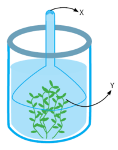

Berdasarkan cara memperoleh makanan, makhluk hidup dapat dibedakan menjadi dua yaitu heterotrof dan autotrof. Makhluk hidup golongan heterotrof menggantungkan makanannya kepada makhluk hidup lain, contohnya hewan dan manusia. Adapun golongan autotrof dapat menyediakan makanannya sendiri, contoh tumbuhan. Tumbuhan dapat membuat makanan sendiri melalui fotosintesis. Fotosintesis adalah proses pembentukan makanan, dalam hal ini glukosa, dari molekul anorganik (CO2 dan H2O) dengan bantuan cahaya. Proses pembentukan molekul kompleks (glukosa) dari molekul sederhana (CO2 dan H2O) dinamakan anabolisme.
Telah kamu ketahui bahwa di dalam klorofil terjadi transformasi energi dari energi cahaya menjadi energi kimia dalam bentuk glukosa (hasil fotosintesis). Adapun reaksi sederhananya sebagai berikut:
6CO2 + 6H2O ⟶ C6H12O6+ 6O2
Ayo Menonton

Kesimpulan
- Dari uji Ingenhousz ini terlihat bahwa proses fotosintesis menghasilkan Oksigen (O2). Dan proses fotosintesis dipengaruhi oleh suhu, cahaya dan kadar karbon dioksida (CO2).

Mari Mencoba
Petunjuk :
- Soal berupa pilihan ganda berjumlah dua soal.
- Gunakan tombol dibawah soal untuk beralih ke soal lainnya.
- Pada saat jawaban dipilih, hasil benar atau salah akan langsung terlihat.

Pernyataan yang benar mengenai percobaan tersebut adalah ….